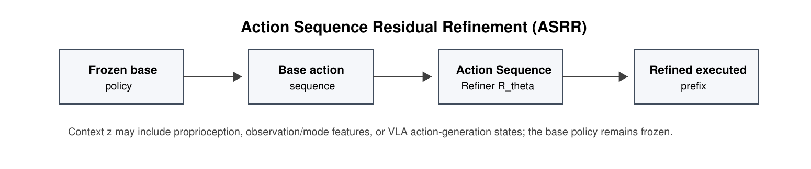
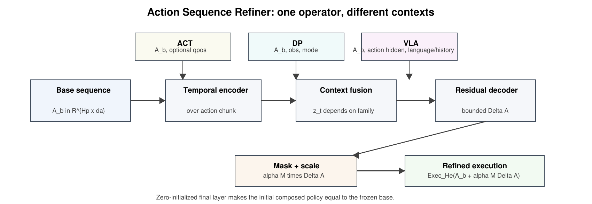
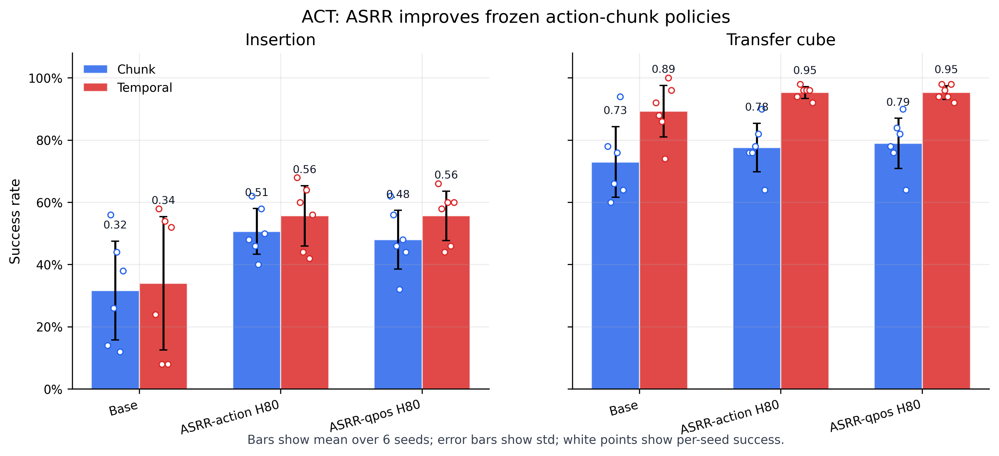
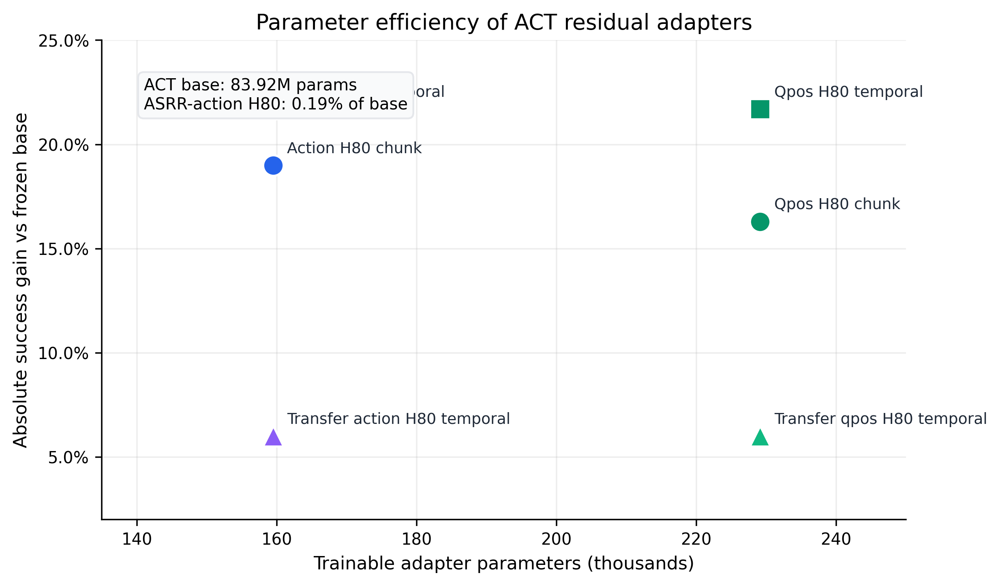
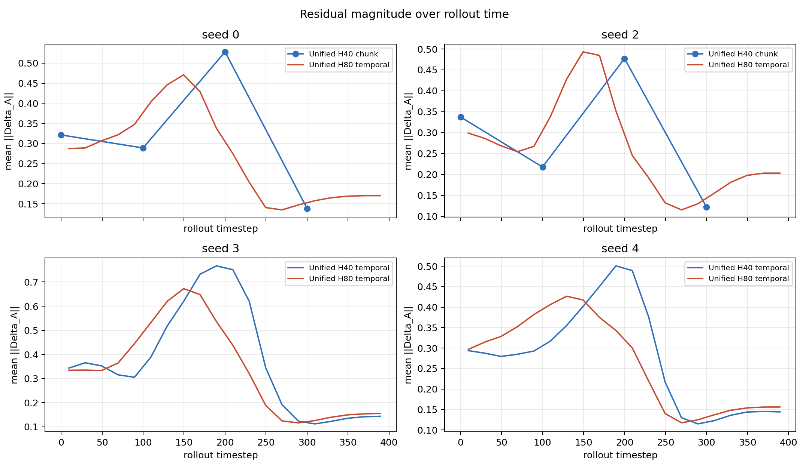
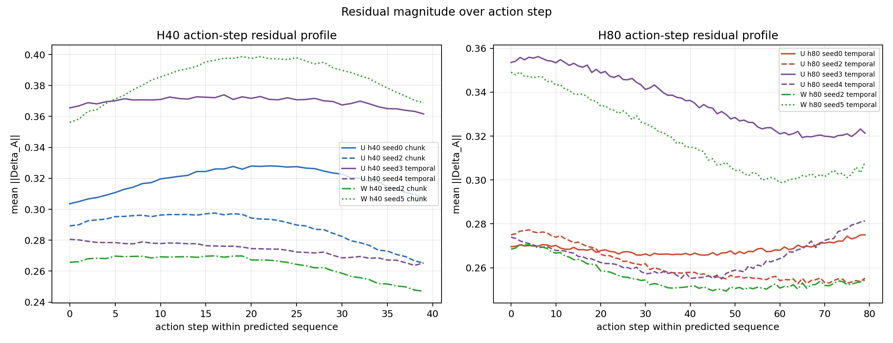
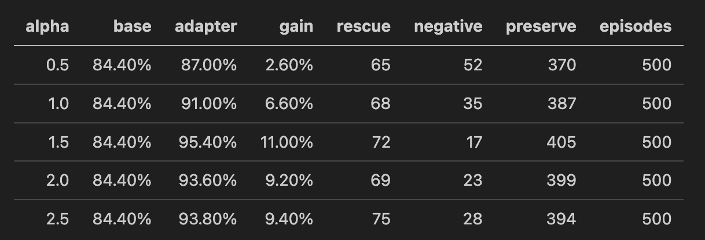
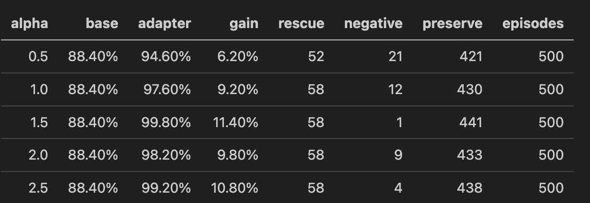
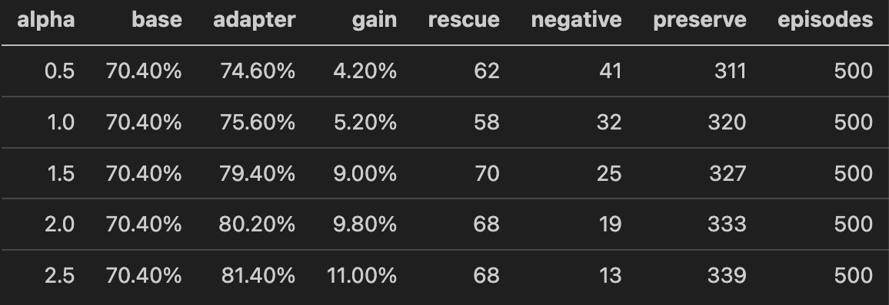
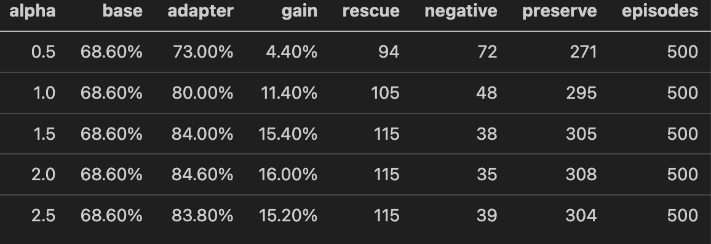

Sequence Tokens
Each proposed action timestep is embedded and processed as part of an editable action sequence.
Anonymous EMNLP Submission
ASRR freezes a base robot policy and learns a compact Action Sequence Refiner that edits the policy's predicted action chunk before execution.
Multimodal signals such as language instructions, visual observations, robot states, and actions are central to modern robotic manipulation. Vision-language-action (VLA) models and action-sequence policies use these signals to generate temporally structured action sequences for robot control, but the resulting sequences are often useful yet imperfect: they may capture the coarse task intent while still reducing rollout success through local action errors or insufficient training.
We propose Action Sequence Residual Refinement (ASRR), an offline adaptation method that freezes a base policy and learns a lightweight Action Sequence Refiner to edit the predicted action sequence in the policy-native action space. Instead of updating the base model, ASRR acts as a plug-in residual correction layer that adds a bounded and optionally masked refinement to the base action proposal.
Across action-sequence policies and VLA methods, ASRR improves multiple frozen bases while training only small refiners. For example, ASRR increases ACT insertion success by +21.7 percentage points under temporal evaluation, and improves pi0.5 average LIBERO suite success by +13.2 percentage points.
ASRR treats action chunks as editable intermediate representations. A frozen base policy proposes a sequence, the refiner predicts a residual, and the original execution protocol consumes the refined prefix or horizon.

The same residual operator can be instantiated with different context sources for ACT, Diffusion Policy, OpenVLA-OFT, Octo, pi0.5, and SmolVLA.

Each proposed action timestep is embedded and processed as part of an editable action sequence.
Optional qpos, low-dimensional observation, mode, task, or action-generation states condition the residual.
VLA settings can freeze gripper or padding dimensions and bound residual size in the native action space.
Zero-initialized residual heads make the composed policy identical to the frozen base at initialization.
ASRR improves imitation-style action-sequence policies and several VLA settings while leaving the base policy frozen.

| Family | Task / suite | Base | ASRR | Gain | Refiner size |
|---|---|---|---|---|---|
| ACT | Insertion | 34.0% | 55.7% | +21.7 pp | 159.5k |
| ACT | Transfer cube | 89.3% | 95.3% | +6.0 pp | 159.5k |
| Diffusion Policy | Square mean | 81.6% | 92.0% | +10.4 pp | 681.7k |
| Diffusion Policy | Transport mean | 76.0% | 84.0% | +8.0 pp | 709.1k |
| OpenVLA-OFT | LIBERO aggregate | 1916 / 2000 | 1929 / 2000 | +13 episodes | 7.66M |
| Octo | LIBERO-10 | 51.0% | 61.6% | +10.6 pp | 707k |
| pi0.5 | LIBERO average | 77.9% | 91.2% | +13.2 pp | 4.0M |
| SmolVLA | LIBERO Goal | 73.0% | 77.4% | +4.4 pp | 5.18M |
Paired rescue and harm counts are central to understanding when a residual intervention repairs a base rollout and when it over-corrects.




ASRR is evaluated on Spatial, Object, Goal, and LIBERO-10 suites for VLA-style policies. Suite-specific alpha sweeps reveal different rescue-harm tradeoffs.




Each VLA policy family occupies two rows: the primary camera first, followed by the wrist camera. Every suite uses two adjacent columns: base failure on the left and ASRR refined rescue on the right.
The current public code release contains a partial snapshot of the policy-agnostic ASRR core. It is intentionally small and independent of policy-specific wrappers. Future updates can refresh the core and add cleaned training scripts, evaluation tools, and full experiment artifacts.
from asrr_core import ActionSequenceResidualAdapter
adapter = ActionSequenceResidualAdapter(
action_dim=7,
horizon=16,
fusion_mode="action_only",
head_type="bounded_dense",
max_delta=0.05,
freeze_last_action_dim=True,
)
delta = adapter(base_action)
refined = base_action + alpha * deltaCitation information will be added after release.
@misc{asrr2026,
title = {ASRR: Action Sequence Residual Refinement for Frozen Vision-Language-Action Policy Adaptation},
author = {Anonymous},
year = {2026},
note = {Anonymous submission}
}